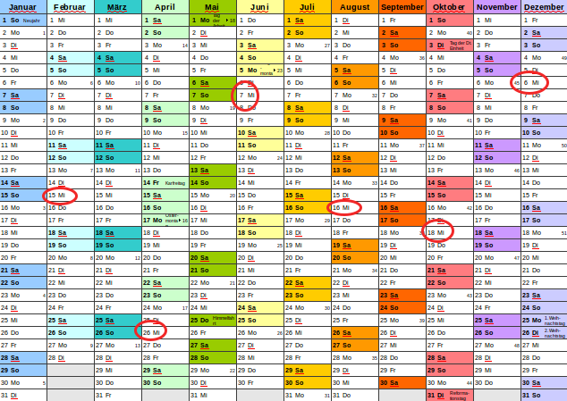

Erstellt von Astrid Günther
Mit Joomla! Kannst du an vielen verschiedenen Stellen Einstellungen vornehmen. Legst du einen neuen Beitrag an, kannst du für diesen bestimmte Dinge festlegen. Du kannst aber auch die Globalen Einstellung übernehmen. Und ab Joomla! 3.7 musst du den Wert der, der in den globalen Einstellungen festgelegt ist nicht mehr auswendig wissen – er wird dir angezeigt.
Ärgerlich, du legst einen neuen Menüpunkt für einen einzelnen Beitrag an, hast aber vergessen den Beitrag zuvor zu erstellen. Ab Joomla! 3.7 gibt es eine neue Schaltfläche die es dir ermöglicht, direkt aus dem Arbeitsfenster heraus, den fehlenden Artikel anzulegen. Dasselbe gilt auch für die anderen Menü-Typen, wie zum Beispiel Kategorie oder Kontakt ...
Mit 3.7 halten die Custom Fields Einzug in Joomla!. Du kannst Feldgruppen und Felder anlegen.
XTD-Schaltflächen Kontakt und Menü.
Nutzt du die Mehrsprachigkeit? Wenn du mehrere Sprache in Joomla! installiert, geschieht dies automatisch für das Front- und das Backend. Die Inhaltssprache wurde bisher aber stiefmütterlich behandelt. Du musstest diese selbst manuell angelegt. Diese Arbeit wird dir Joomla! 3.7 abnehmen.
Vereinfachung für Programmierer beim Router in der Entwicklung.
Facebook Login
Neuer Kalender
Vielleicht lernst du bei einem Treffen jemanden kennen und würdest gerne mit ihm Kontakt aufnehmen.
PDFIm nächsten Jahr wollen wir uns alle zwei Monate treffen.

- Erstelle nun dein Profil im internen Bereich der JUG Koblenz
- Besuche uns auf Facebook